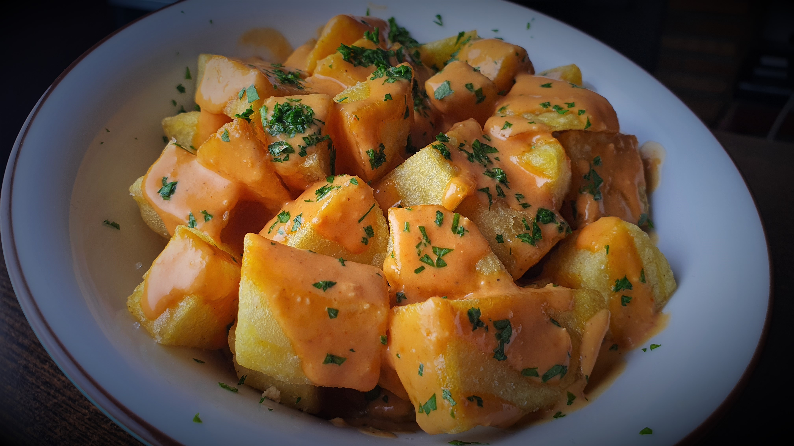
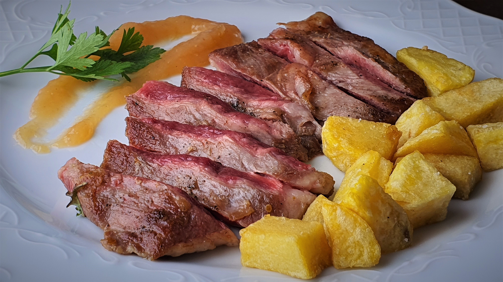
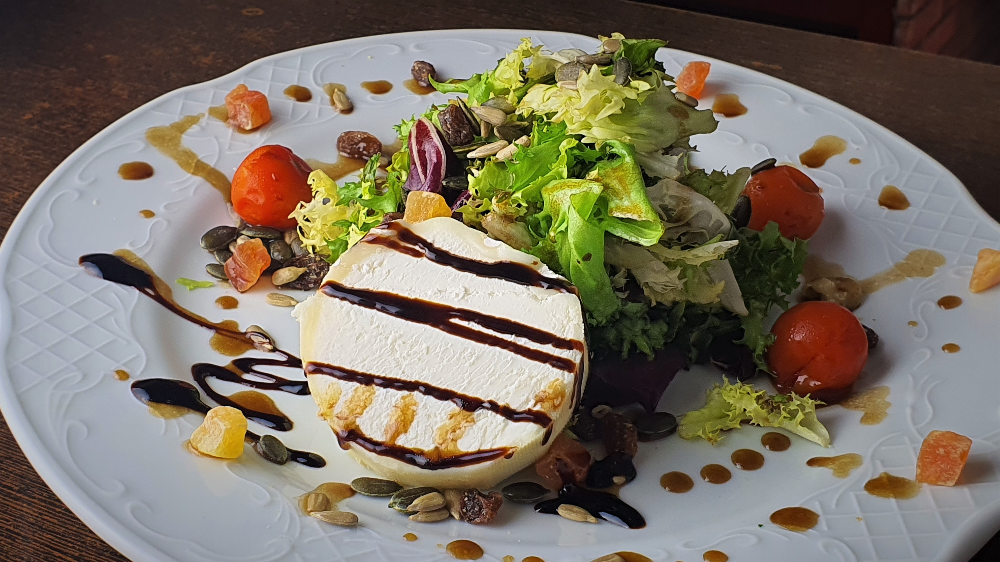
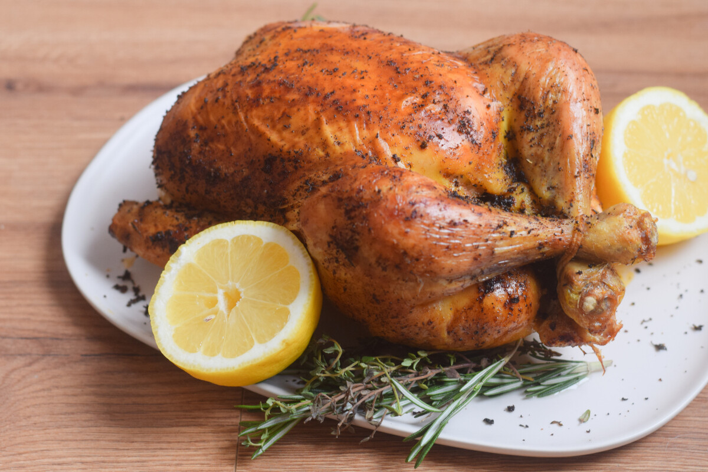

Menú diario
Consulta nuestro menú diario.
Ver menú diarioBonastre · Tarragona
Bonastre · Tarragona
Producto de calidad, cocina de proximidad y el mejor ambiente para disfrutar cada día.
Ver carta


Consulta nuestro menú diario.
Ver menú diarioUna selección de tapas, platos y especialidades para todos los gustos.
Ver la cartaOpciones caseras elaboradas con ingredientes de calidad y mucho sabor.
Ver frankfurts y hamburguesasUnas deliciosas propuestas de dulces artesanales. También por encargo para llevar.
Ver reposteríaEspecial de los domingos
Todos los domingos
Pollos jugosos, sabrosos y preparados con todo el cariño. Haz tu encargo y disfruta en familia sin cocinar.
Recogida de 12:00 a 15:00
